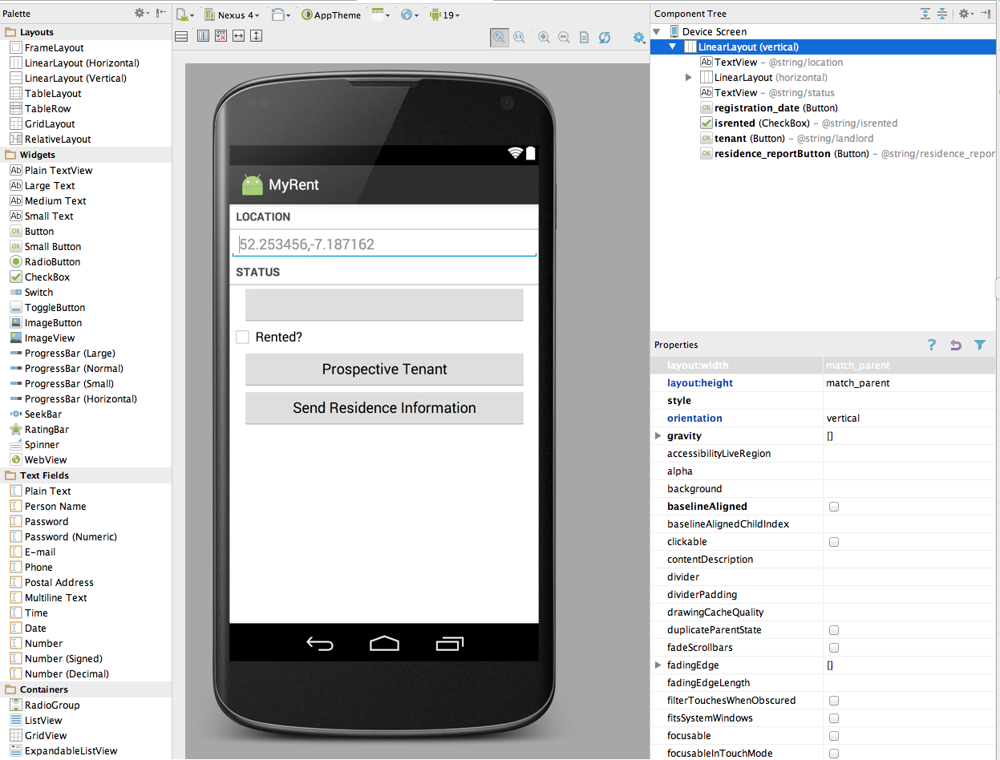

Contact list & Email support
Activities within an application can reach out to activities in other applications to perform specific tasks. In this lab we introduce two new features - selecting a contact from the phone's contact lists, and sending an email to the selected user. Both of these features require the use of 'implicit' intents.
Resources
Continue building the MyRent app that you developed in the previous lab.
For reference, we are providing a version here of the completed MyRent-03:
git clone https://github.com/wit-computing/myrent-04.git
In preparing for our new features, we define some strings to be used by the application. This step is not strictly necessary - but taking this approach is considered best practice, and enables the application to be internationalized more easily.
These are the new strings:
res/strings.xml
<string name="landlord">Prospective Tenant</string>
<string name="residence_report">Send Residence Information</string>
<string name="residence_report_rented">The residence is already let.</string>
<string name="residence_report_not_rented">The residence is still available.</string>
<string name="residence_report_nobody_interested">There is no other prospective tenant at this time.</string>
<string name="residence_report_prospective_tenant">The prospective tenant is %s.</string>
<string name="residence_report_subject">Status Report on Residence Availability</string>
<string name="send_report">Send residence report via</string>
We need 2 new buttons which will enable the user to select a contact, and send an email:

These are the button characteristics:
res/layout/activity_residence.xml
<Button
android:id="@+id/tenant"
android:layout_width="match_parent"
android:layout_height="wrap_content"
android:layout_marginLeft="16dp"
android:layout_marginRight="16dp"
android:text="@string/landlord" />
<Button android:id="@+id/residence_reportButton"
android:layout_width="match_parent"
android:layout_height="wrap_content"
android:layout_marginLeft="16dp"
android:layout_marginRight="16dp"
android:text="@string/residence_report"
/>
Helpers
Our IntentHelper class is a useful location for methods that involved intents, either explicit or implicit. Here we introduce two new methods to trigger contact list and email access:
IntentHelper
public static void selectContact(Activity parent, int id)
{
Intent selectContactIntent = new Intent(Intent.ACTION_PICK, ContactsContract.Contacts.CONTENT_URI);
parent.startActivityForResult(selectContactIntent, id);
}
public static void sendEmail(Context context, String email, String subject, String body)
{
Intent emailIntent = new Intent(Intent.ACTION_SENDTO, Uri.fromParts("mailto", email, null));
emailIntent.putExtra(Intent.EXTRA_SUBJECT, subject);
emailIntent.putExtra(Intent.EXTRA_TEXT, body);
context.startActivity(Intent.createChooser(emailIntent, "Sending Email"));
}
The import statements for the above:
import android.provider.ContactsContract;
import android.content.Context;
import android.net.Uri;
We will make use of these in the next step.
ContactHelper
Accessing the phone's contact list an be complex, requiring us to engage with the 'Content Provider' API for the Contact List. Having this awkward code in our activities can make them hard to read - so we resort to another helper:
package org.wit.android.helpers;
import android.content.Context;
import android.content.Intent;
import android.database.Cursor;
import android.net.Uri;
import android.provider.ContactsContract;
import android.content.ContentResolver;
public class ContactHelper
{
public static String getDisplayName(Context context, Intent data)
{
String contact = "unable to find contact";
Uri contactUri = data.getData();
String[] queryFields = new String[] { ContactsContract.Contacts.DISPLAY_NAME };
Cursor c = context.getContentResolver().query(contactUri, queryFields, null, null, null);
if (c.getCount() == 0)
{
c.close();
return contact;
}
c.moveToFirst();
contact = c.getString(0);
c.close();
return contact;
}
public static String getEmail(Context context, Intent data)
{
String email = "no email";
Uri contactUri = data.getData();
ContentResolver cr = context.getContentResolver();
Cursor cur = cr.query(contactUri, null, null, null, null);
if (cur.getCount() > 0)
{
try
{
cur.moveToFirst();
String contactId = cur.getString(cur.getColumnIndex(ContactsContract.Contacts._ID));
Cursor emails = cr.query(ContactsContract.CommonDataKinds.Email.CONTENT_URI, null,
ContactsContract.CommonDataKinds.Email.CONTACT_ID + " = " + contactId, null, null);
emails.moveToFirst();
email = emails.getString(emails.getColumnIndex(ContactsContract.CommonDataKinds.Email.DATA));
emails.close();
}
catch (Exception e)
{
}
}
return email;
}
public static String getContact(Context context, Intent data)
{
String contact = "unable to find contact";
Uri contactUri = data.getData();
String[] queryFields = new String[] { ContactsContract.Contacts.DISPLAY_NAME };
Cursor c = context.getContentResolver().query(contactUri, queryFields, null, null, null);
if (c.getCount() == 0)
{
c.close();
return contact;
}
c.moveToFirst();
contact = c.getString(0);
c.close();
return contact;
}
}
The above is fairly crudely implemented - we can either get uses 'Diaplay Name' or their 'Email' - but not both.
The second method - getting an email - will require explicit permission to acccess the detail in a contact. otherwise it will fail. In the manifest, introduce the following before the application element:
<uses-permission android:name="android.permission.READ_CONTACTS" />
Residence
The Residence model class will need to be extended to include a new field (the tenant) and also a new method, one to generate a report. First introduce these imports:
import org.wit.myrent.R;
import android.content.Context;
This is the new field:
public String tenant;
Initialize this in the default constructor with a String literal to avoid a future null pointer exception error:
public Residence()
{
...
...
tenant = ": none presently";
}
We will also dispence with the this reference in the Residence constructor as there are no arguments and thus no need to difference between similarly named local variables (actual parameters) and instance variables:
public Residence()
{
id = UUID.randomUUID();
date = new Date();
geolocation = "52.253456,-7.187162";
tenant = ": none presently";
}
To keep serialization on track - add an identifier for this new field:
private static final String JSON_TENANT = "tenant";
... which will need to be engaged in the overloaded constructor:
public Residence(JSONObject json) throws JSONException
{
...
...
tenant = json.getString(JSON_TENANT);
}
... and the serialization itself:
json.put(JSON_TENANT , tenant);
Finally, a new method to generate the contents of the email:
public String getResidenceReport(Context context)
{
String rentedString = null;
if (rented)
{
rentedString = context.getString(R.string.residence_report_rented);
}
else
{
rentedString = context.getString(R.string.residence_report_not_rented);
}
String dateFormat = "EEE, MMM dd";
String dateString = android.text.format.DateFormat.format(dateFormat, date).toString();
String prospectiveTenant = tenant;
if (tenant == null)
{
prospectiveTenant = context.getString(R.string.residence_report_nobody_interested);
}
else
{
prospectiveTenant = context.getString(R.string.residence_report_prospective_tenant, tenant);
}
String report = "Location " + geolocation + " Date: " + dateString + " " + rentedString + " " + prospectiveTenant;
return report;
}
ResidenceActivity - Tenant
We can then start to wire up a "Prospective Tenant" button.
The imports:
import static org.wit.android.helpers.ContactHelper.getContact;
import static org.wit.android.helpers.IntentHelper.selectContact;
import android.content.Intent;
An ID we will use for the implicit Intent:
private static final int REQUEST_CONTACT = 1;
The button to trigger the intent:
private Button tenantButton;
Initialization in onCreate of the button:
tenantButton = (Button) findViewById(R.id.tenant);
Its event handler set up in updateControls:
tenantButton.setOnClickListener(this);
And then the event handler itself:
@Override
public void onClick(View v)
{
switch (v.getId())
{
//...
case R.id.tenant : selectContact(this, REQUEST_CONTACT);
break;
}
}
This last method will trigger a 'startActivityForResult' - which we will have to deal with in order to recover the actual contact. This will be provided by the following new method (for which an import statement that follows is required):
@Override
public void onActivityResult(int requestCode, int resultCode, Intent data)
{
switch (requestCode)
{
case REQUEST_CONTACT : String name= getContact(this, data);
residence.tenant = name;
tenantButton.setText(name);
break;
}
}
import static org.wit.android.helpers.ContactHelper.getContact;
Note that the above passes the data we received from the Contact List activity to our helper, which will recover the actual email address.
Test as follows:
- build and install the app on an emulator or device,
- create a residence
- press the Prospective Tenant button. You should be taken to your contact list.
- select a contact. This should return you to the MyRent Residence Activity screen. The contact name should be present on the button as shown in Figure 1.
Warning: an issue exists which may be reproduced by pressing the Prospective Tenant button and immediately pressing the back button but without chosing a contact.
ResidenceActivity - Email
Now we can engage the report button to actually send the email.
The imports:
import static org.wit.android.helpers.IntentHelper.sendEmail;
The Button object:
private Button reportButton;
Initialisation of the button:
reportButton = (Button) findViewById(R.id.residence_reportButton);
Enabling the event handler:
reportButton.setOnClickListener(this);
The event handler itself:
@Override
public void onClick(View v)
{
switch (v.getId())
{
//...
case R.id.residence_reportButton : sendEmail(this, "", getString(R.string.residence_report_subject), residence.getResidenceReport(this));
break;
}
}
Test this now. Make sure the contact you select actually has an email address in the contact info.
If gmail is the default mail handling app, it may look like this: